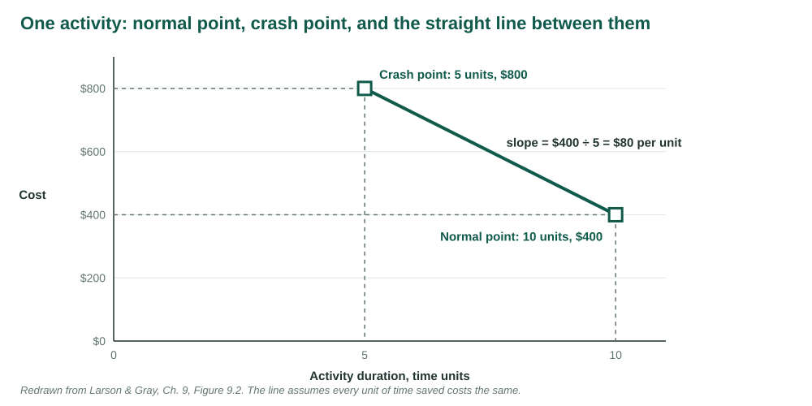
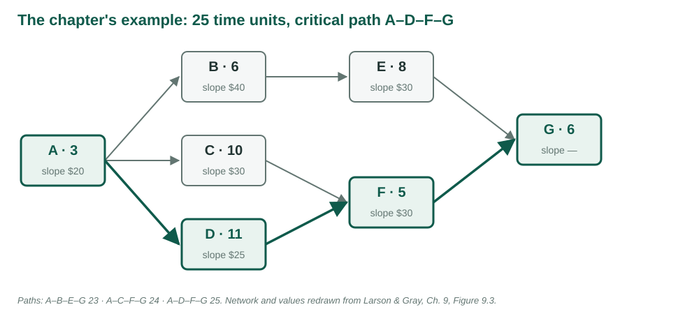
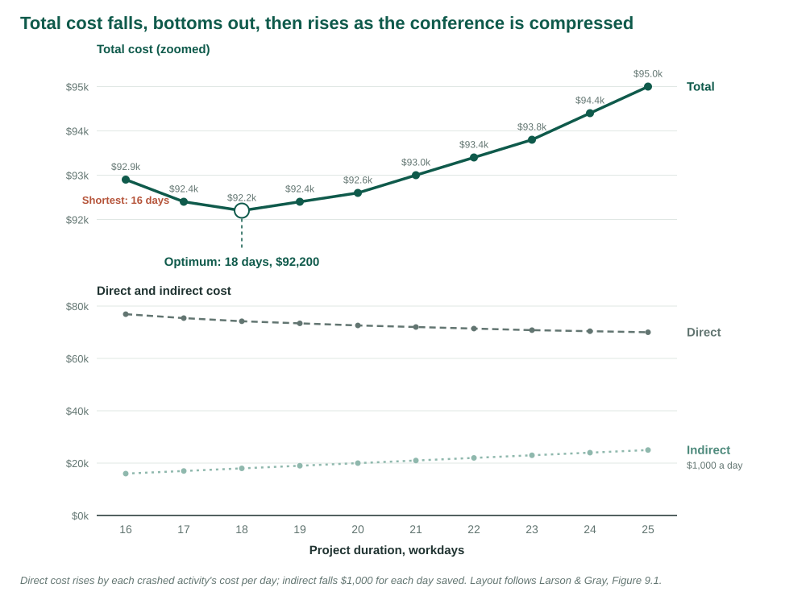

IMSE 456/656 · Larson Ch. 9
2026-10-27
Speed is the ultimate weapon in business. All else being equal, the fastest company in any market will win.
Dave Girouard, quoted in Larson & Gray, Ch. 9 [1]. Figures redrawn from the chapter. The conference’s crash estimates are original to this course.
Week 9 left the conference staffed and budgeted: 25 workdays, $70,000 direct.
This week someone wants it sooner.
Every day can be bought. The questions are which day, at what price, and when to stop buying.
| LO 9-1 | Why crash a project |
| LO 9-2 | Options when resources are available |
| LO 9-3 | Options when resources are constrained |
| LO 9-4 | Find the optimum cost-time point |
| LO 9-5 | The risks of compressing a schedule |
| LO 9-6 | When cost, not time, is the issue |
| Term | Meaning |
|---|---|
| Crashing | Shortening a project below its normal, lowest-cost duration |
| Direct cost | Labour, materials, equipment charged to an activity |
| Indirect cost | The cost of keeping the project open, per day |
| Crash time | The shortest realistic time for an activity |
| Slope | The cost of saving one day on one activity |
| Optimum cost-time point | The duration with the lowest total cost |
The finished schedule lands two months after a date the boss promised a customer.
Five months in, you are three weeks behind a date that cannot move.
Four months in, management says money is no object: just finish.
The plan is sound. The date is wrong.
| Option | How | The catch |
|---|---|---|
| Add resources | More people or equipment on a critical activity | Coordination and training |
| Outsource | A specialist with better tools or skills | Less control |
| Overtime | More hours from the same people | Cost and fatigue |
| Do it twice | A quick interim fix now, the real one later | Paying for the work twice |
A team of n people has n(n − 1)/2 pairs to coordinate.
Two people: one pair. Four people: six pairs.
“Adding manpower to a late software project makes it later” [2].
Later research: not always. What matters is adding people early enough to become productive [1].
| Option | What changes | The catch |
|---|---|---|
| Improve efficiency | Planning, fewer obstacles | Modest gains |
| Fast tracking | Sequential work overlaps | Rework if inputs change |
| Critical chain | Buffers and estimates | Hard to adopt mid-project |
| Reduce scope | What is delivered | Lost value |
| Compromise quality | How well | Rarely acceptable |
A finish-to-start link becomes start-to-start with a lag.
Engineers start the production line once key specifications are set, not after final approval.
Shorter, if the specifications hold. Rework, if they change.
“You can have all of it in February, or these parts of it in December.”
Requirements written in an optimistic moment include things that are desirable, not essential.
The conversation either buys time or money, or separates must from nice.
Indirect costs accrue every day the project is open: supervision, rent, interest. Shorten the project and they fall.
Direct costs belong to activities. Shorten an activity and its direct cost rises.
Total = direct + indirect. Somewhere it stops falling.

slope = (crash cost − normal cost) ÷ (normal time − crash time)
The cost of saving one day on that activity.
Can save: normal time − crash time.
Total cost at each duration = direct + indirect. The optimum is the smallest total.

| Activity | Normal | Crash | Slope | Can save |
|---|---|---|---|---|
| A | 3, $50 | 2, $70 | $20 | 1 |
| B | 6, $80 | 4, $160 | 40 | 2 |
| C | 10, $60 | 9, $90 | 30 | 1 |
| D | 11, $50 | 7, $150 | 25 | 4 |
| E | 8, $100 | 6, $160 | 30 | 2 |
| F | 5, $40 | 4, $70 | 30 | 1 |
| G | 6, $70 | 6, $70 | — | 0 |
Values from Figure 9.3 [1]. Direct cost $450 at 25 units.
| Duration | Cut | Cost | Direct | Indirect | Total |
|---|---|---|---|---|---|
| 25 | — | $450 | $400 | $850 | |
| 24 | A | $20 | 470 | 350 | 820 |
| 23 | D | 25 | 495 | 300 | 795 |
| 22 | F, on two paths | 30 | 525 | 250 | 775 |
| 21 | C + D + E | 85 | 610 | 200 | 810 |
Values from Figures 9.4 and 9.5 [1].
At 22: F lies on two critical paths. One $30 cut shortens both.
At 21: every path needs its own cut. $85 to save $50 of indirect cost.
Optimum: 22 units, $775. Three units earlier and $75 cheaper than normal.
| ID | Activity | Normal | Crash | Per day saved |
|---|---|---|---|---|
| A | Approve event brief | 2 | 1 | $1,200 |
| B | Contract venue | 5 | 3 | 700 |
| C | Draft program | 6 | 4 | 400 |
| D | Configure registration | 4 | 3 | 900 |
| E | Confirm speakers | 8 | 5 | 600 |
| ID | Activity | Normal | Crash | Per day saved |
|---|---|---|---|---|
| F | Recruit exhibitors | 5 | 3 | $300 |
| G | Publish program | 3 | 2 | 1,500 |
| H | Prepare on-site materials | 4 | 2 | 800 |
| I | Complete rehearsal | 2 | 2 | — |
Normal: 25 workdays, $70,000 direct. Indirect: $1,000 a day.
Critical path A–C–E–G–H–I: 25 days.
Venue path A–B–D–G–H–I: 20. Exhibitor path A–C–F–H–I: 19.
F at $300 a day is not on the critical path.
| Days | Shorten | Day costs | Total | Finish |
|---|---|---|---|---|
| 25 | — | $95,000 | Fri 4 Dec | |
| 24, 23 | C | $400 | 93,800 | Wed 2 Dec |
| 22 to 20 | E | 600 | 92,600 | Fri 27 Nov |
| 19, 18 | H, shared | 800 | 92,200 | Wed 25 Nov |
| 17 | A, shared | 1,200 | 92,400 | Tue 24 Nov |
| 16 | G, shared | 1,500 | 92,900 | Mon 23 Nov |
At 20 days the venue path is critical too.
E shortens only the program path. Cutting it again would leave the venue path at 20.
The only cuts that shorten both are shared: H, then A, then G.

Crash while the next day costs less than a day of indirect cost.
H costs $800, less than $1,000: buy. A costs $1,200, more than $1,000: stop.
Optimum: 18 workdays, Wed 25 Nov, $92,200. A week earlier and $2,800 cheaper than normal.
| Indirect per day | Optimum | Why |
|---|---|---|
| $700 | 20 days | H at $800 is no longer worth it |
| $1,000 | 18 days | H yes, A no |
| $1,300 | 17 days | A at $1,200 becomes worth it |
A coordinator books every rush option. All nine activities at crash time.
Finish: 16 workdays, Mon 23 Nov. Direct cost: $79,800.
Total cost? Compared with doing nothing? Which crashes bought no time?
Before the project, with no date imposed: normal times mean what they say.
After a date is imposed: the “normal” times have already been bent.
Mid-project: some options have gone. The reasoning still applies.
“The shortest time you can realistically do it in” means different things to different people.
Crash data is rougher than normal data, so the straight line is rarely the weak point.
Exception: all-or-nothing crashing. 10 days, or 7 with a second crew, and nothing between.
| Consider | Because |
|---|---|
| Risk | Rushing design can cost weeks downstream |
| Timing | Crashing early banks time against later slips |
| Resources | The cheap crash may need people already committed |
| Morale | The same group crashed every time burns out |
| Option | How it saves |
|---|---|
| Reduce scope | Deliver less; any activity is a candidate, critical or not |
| Owner takes on work | The customer does what it can, agreed up front |
| Outsource | Specialists with discounts, equipment, lower overhead |
| Brainstorm | Ask the team: one found $75,000 without cutting scope [1] |
A day saved is worth exactly what the project costs per day. Buy the cheap days, on every critical path, and stop when the next one costs more.
Duration drives the dates. Direct cost prices each activity at its current length. The Sheet Summary adds Workdays, Direct, Indirect and Total.
Each round: read the critical paths on the Gantt, cut the cheapest way across all of them, read Total. Stop when it rises.
Time units read as workdays from Mon 2 Nov. Indirect is =400 - 50 * (25 - [Workdays]#).
Read: 25 days, Fri 4 Dec, $450 + $400 = $850. Critical: A–D–F–G.
A 3d → 2d: 24 days, $820. D 11d → 10d: 23 days, $795.
At 23 the Gantt highlights A–C–F–G too.
F lies on both: 5d → 4d. 22 days, Tue 1 Dec, Total $775.
All three paths are critical now, and A and F are spent.
C, D and E, one on each path: $85 for a day worth $50. Total $810. Undo all three: the optimum is 22.
Same routine, nine activities, $1,000 a day.
Read: 25 workdays, $70,000 + $25,000 = $95,000. Critical: A–C–E–G–H–I.
Which activity? Not F: it is not critical.
C Duration 6d → 5d. Finish moves to Thu 3 Dec; Total to $94,400.
C again: $93,800. E three times: $92,600 at 20 days.
At 20 days the Gantt highlights the venue path too.
E would shorten only one path. H shortens both: 4d → 3d → 2d.
Read: 18 workdays, Wed 25 Nov, Total $92,200.
A 2d → 1d: 17 workdays, Total $92,400. It went up.
Undo. The optimum is where the total turned.
The marimo notebook runs both examples with nothing to install.
Sliders crash each activity; the critical paths, the finish and Total move as you drag. Step through the procedure, see the graph, and check every combination.
70 minutes, one file: the conference crashing workbook, linked from the Studio 10 page.
| Part | Minutes | What |
|---|---|---|
| 1 · Smartsheet | 35 | Import, dependencies, cost formulas, crash day by day to the optimum |
| 2 · Colab | 25 | Check your steps exactly; move the price of a day |
| Upload | 5 | Four screenshots, the crashing table, six answers |
INDIRECT_PER_DAY = 700, then 1300: where does the optimum go?Then one PDF to Blackboard as SA10_yourlastname.pdf before you leave.
IMSE 456/656 · Program and Project Management · NDSU